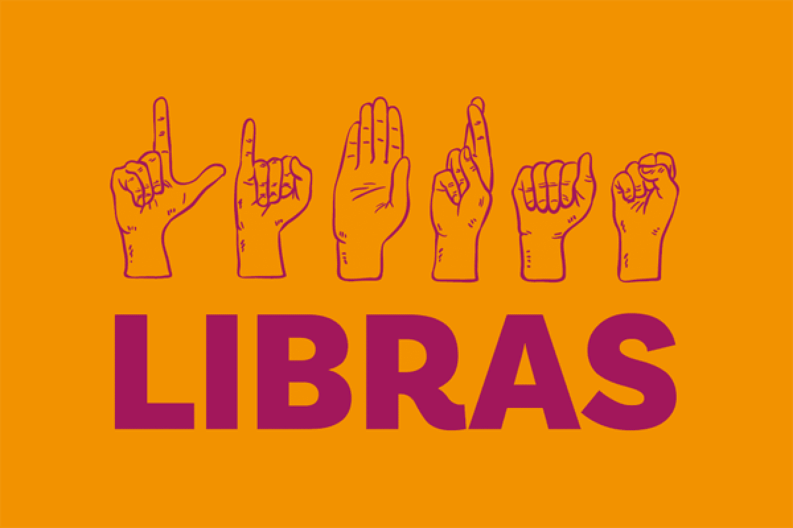
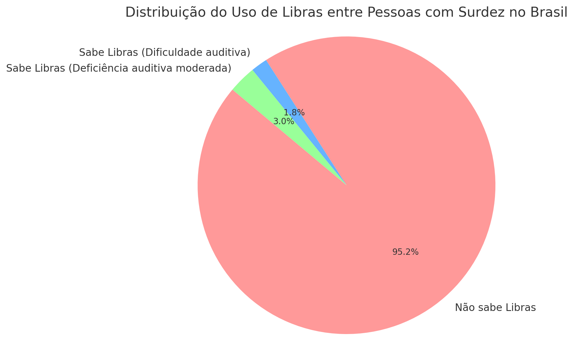
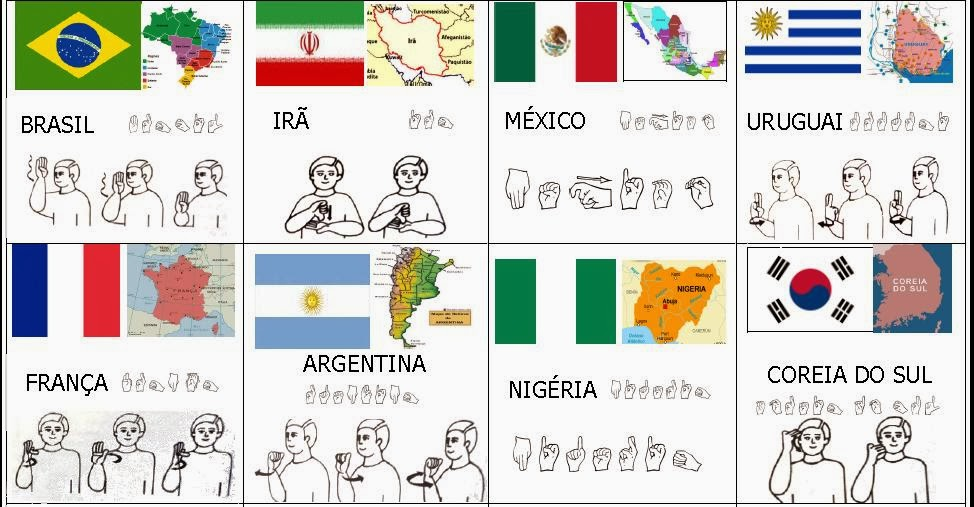

A importância da Língua de Sinais na era da inclusão começa principalmente na área da educação.
Quando o ensino de Libras passa a ser cada vez mais comum, naturalmente as escolas públicas e particulares se tornam mais preparadas para receberem alunos com algum nível de surdez.
No Brasil, escolas de diversos estados já disponibilizam tradutores e intérpretes de Libras para que os alunos surdos tenham condições de estudarem no ensino público regular.
Esse investimento inicial é um dos passos importantes rumo à desejada educação bilíngue, que proporcionará amplo acesso a um ensino de qualidade para os surdos.
Devido a essa crescente demanda por profissionais capazes de atender às necessidades de comunicação dos surdos, a formação em Libras é tida como um importante diferencial para os profissionais da área de educação.
No que se refere às atividades culturais, o ensino e a adoção de Libras são fundamentais para que as pessoas surdas tenham acesso à informação e possam participar de atividades culturais diversas, tais como palestras, apresentações etc.

O levantamento realizado pelo Instituto Brasiliero de Geografia e Estatística (IBGE), publicado no ano de 2021, mostra que cerca de 2,3 milhões de pessoas possuem algum grau de surdez. Apesar de existir Língua Brasileira de Sinais (Libras), a maior parte da população brasileira surda não sabe utilizá-la. De acordo com a Pesquisa Nacional de Saúde (PNS), entre os que têm alguma dificuldade auditiva, apenas 1,8% sabe usar a Libras, entre os que têm deficiência auditiva moderada, apenas 3%. Foram consultadas pessoas com deficiência auditiva com mais de 5 anos.
Um estudo realizado pelo Instituto Locomotiva e a Semana da Acessibilidade Surda, em 2019, cerca 32% dos surdos não têm instrução e apenas 7% possuem ensino superior completo. Estes números podem estar ligados à falta de acessibilidade e inclusão de alunos surdos nas escolas.
A intérprete de Libras Thais Fernanda Kuka explica que a falta de intérpretes formados afeta na educação de alunos com deficiência auditiva, além de muitos não terem acesso a Libras para se comunicarem em uma sala de aula. “Como muitos alunos surdos não têm acesso a Libras, irão procurar por outros mecanismos para se sentirem incluídos”. De acordo com a intérprete, o aluno surdo passa a optar pela leitura labial ou pelo aparelho auditivo.
Thais relata que a falta de aceitação no ambiente escolar e na sociedade pode causar um bloqueio na interação dos surdos com outras pessoas. Ela cita como exemplo duas crianças que acompanhou, uma delas foi inserida em grupos sociais dentro e fora da escola; a outra não conseguia se aproximar de outros jovens, pois se sentia insegura ao se comunicar.
Para a intérprete, a busca pela inserção rápida da pessoa surda tende a levar ao uso de aparelho auditivo ou de leitura labial, mas isso afeta a identidade dela. "A falta de conhecimento na comunidade prejudica o surdo. A família ao invés de procurar a aceitação, irá propor outras alternativas que se tornam um obstáculo no amadurecimento do surdo", ressalta

Libras é uma língua?
Sim! Em 1880, no Congresso de Milão, um congresso de educadores de pessoas surdas, a comunicação através das Línguas de Sinais foi proibida e então definiram o regime de oralização para essas pessoas. Isso significa que elas deveriam aprender a fazer leitura labial e oralizar, para se comunicarem de forma mais parecida com as pessoas ouvintes. Essa decisão impactou na vida, especialmente na educação e desenvolvimento, de todas as pessoas surdas por todo o mundo, inclusive no Brasil.
Depois de muita luta pela educação e acesso à informação das pessoas surdas e militantes da causa, foi apenas em 2002, que a Libras passou a ser uma língua reconhecida pela Lei nº. 10.436/2002 no Brasil. É importante destacar que ela não é considerada um idioma e sim uma língua reconhecida no país.

Como surgiu a Libras?
Muitas pessoas imaginam que por falarmos Português no Brasil, a Libras seria igual a Língua Gestual Portuguesa (LGP), que é utilizada pelas pessoas surdas em Portugal. Mas isso não é verdade! A Libras, assim como várias outras Línguas de Sinais pelo mundo, possui origem na Língua de Sinais Francesa (LSF). E foi criada junto com o Instituto Nacional de Educação de Surdos (INES).
Como é a Língua Brasileira de Sinais, é claro que ela possui muita influência da nossa cultura, já que também conta com sinais que eram utilizados pelas pessoas surdas no Brasil, antes de se tornar uma língua reconhecida por lei.
A Libras é Universal?
A pergunta “a Libras é universal?”, talvez seja uma das mais comuns sobre o tema. Mas a resposta é não! Estima-se que existem entre 138 e 300 diferentes Línguas de Sinais por todo o mundo!
Além disso, ainda têm outras variações destas Línguas de Sinais. Isso se dá através do regionalismo ou até mesmo por grupos de afinidade. No Brasil, temos a Cena, que é emergente do sertão do Piauí e todos os seus sinais foram criados pela população local. Temos também a Língua de Sinais Indigena, conhecida como Kaapor.
Quais países usam a Libras?
A Libras é utilizada apenas no Brasil, sendo ela uma das formas mais comuns de comunicação entre as pessoas surdas do nosso país. Estima-se que ela é o principal meio de comunicação de cerca de 3 milhões de pessoas.
Surdos vistos pelos romanos Strobel mostra que na Idade Antiga os surdos eram adorados no Egito e na Pérsia, pois se acreditava que eles se comunicavam com os deuses, mas na Grécia e em Roma, eles eram assassinados e os que escapavam eram escravizados. Na Idade Média, eram tidos como objeto de curiosidade, como seres estranhos.
